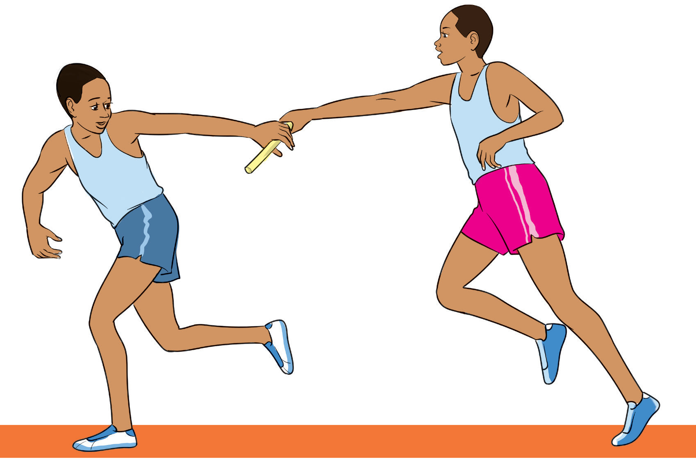

Running 4x400 m relay
The first 100 m comprises the incoming runner running in relaxed and smooth manner and maintaining running rhythm and velocity with the least effort at the curve;
The 100–200 m, runner should try to overcome other athletes’ backstretch before getting to the curve;
The 200–300 m, the runner starts to increase the arm drive and knee lifts. Also, the runner begins to overcome other athletes in the outside lanes. This will help the runner to come off the final turn with good momentum and in good position to win the race; and
The 300–400 m, the runner must gain momentum once approaching the finishing line.
Baton exchange in 4x400 m relay
Baton exchange technique in 4x400 m relay is always a visual exchange technique done by the incoming runner holding the baton uptight with the upright hand towards the outgoing runner, as shown in Figure 5.12. The outgoing runner faces the inside of the track and receives in the left hand with fingers extended and thumb pointing upward; the outgoing runner accelerates to match the speed of the incoming runner.
